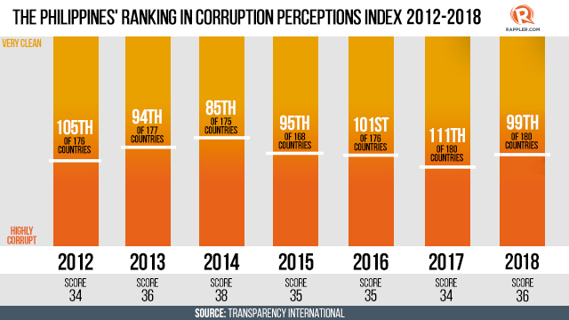
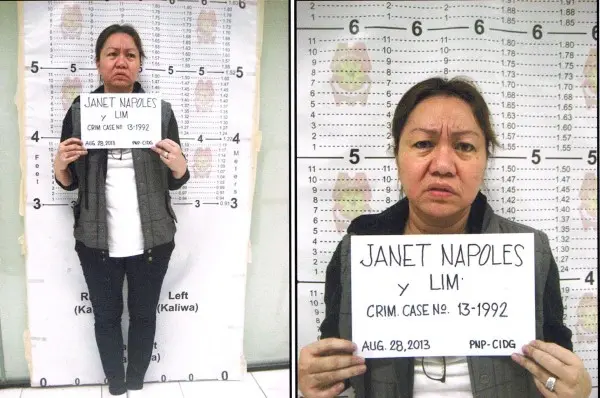

Poverty
Funds lost to corruption could have been used to better lives.
Corruption, Philippines
The Philippine's corruption ranking in corruption perceptions index 2012-18
Fat Pig
A political cartoon depicting political corruption.
Sharing is Caring
An illustration depicting how corruption wastes funds intended to help the needy.
Jeepney Drivers
Jeepney drivers asking for alms because of systemic mismanagement.
Oscar Agbayalde
Former police chief and Duterte's chief drug war enforcer, was charged with corruption for protecting officers linked to the drug trade.
Janet Lim-Napoles
Janet Lim-Napoles, the mastermind behid the $220 million pork barrel scam.
The Three Senators

The three senators associated with the pork barrel scam.